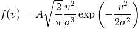

Bases: astropy.modeling.core.Fittable1DModel
Maxwellian pulsar velocity distribution.

Reference: http://adsabs.harvard.edu/abs/2006ApJ...643..332F
| Parameters: | amplitude : float
sigma : float
|
|---|
Attributes Summary
| amplitude | |
| param_names | list() -> new empty list |
| sigma |
Methods Summary
| eval(v, amplitude, sigma) | One dimensional Faucher-Guigere & Kaspi 2006 velocity model function |
Attributes Documentation
Methods Documentation